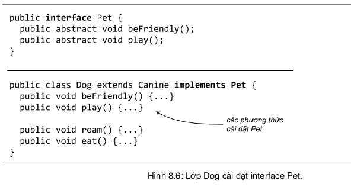
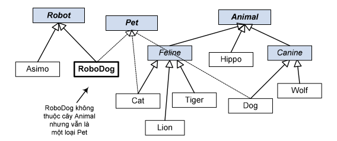

Giải pháp mà Java cung cấp là interface. Thuật ngữ interface của tiếng Anh thường được dùng với nghĩa 'giao diện', chẳng hạn như "giao diện người dùng", hay như trong câu "Các phương thức public của một lớp là giao diện của nó đối với bên ngoài". Tuy nhiên, trong mục này, ta nói đến khái niệm interface với ý nghĩa là một cấu trúc lập trình của Java được định nghĩa với từ khóa interface (tương tự như cấu trúc lớp được định nghĩa với từ khóa class).
Cấu trúc interface này cho phép ta giải quyết bài toán đa thừa kế, cho ta hưởng phần lớn các ích lợi mang tính đa hình mà đa thừa kế mang lại, nhưng tránh cho ta các rắc rối nhập nhằng ngữ nghĩa như đã giới thiệu trong mục trước.
Nguy cơ nhập nhằng ngữ nghĩa được tránh bằng cách rất đơn giản: phương thức nào cũng phải trừu tượng! Theo đó, lớp con buộc phải cài đặt các phương thức. Nhờ vậy, khi chương trình chạy, máy ảo Java không phải bối rối lựa chọn giữa hai phiên bản mà một đối tượng được thừa kế.
Một interface, do đó, giống như một lớp thuần túy trừu tượng bao gồm toàn các
phương thức trừu tượng và không có biến thực thể. Nhưng về cú pháp thì interface
có khác lớp trừu tượng một chút. Để định nghĩa một interface, ta dùng từ khóa
interface thay vì class như đối với lớp:
public interface Pet {...}
Đối với một lớp trừu tượng, ta cần tạo lớp con cụ thể. Còn đối với một interface, ta tạo lớp cài đặt các phương thức trừu tượng mà interface đó đã quy định. Lớp đó được gọi là lớp cài đặt interface mà ta đang nói đến.
Để khai báo rằng một lớp cài đặt một interface, ta dùng từ khóa implements thay vì extends, theo sau là tên của interface.
Một lớp có thể cài đặt một vài interface và đồng thời là lớp con của một lớp
khác. Chẳng hạn lớp Dog vừa là lớp con của Canine, vừa là lớp cài đặt interface Pet:
class Dog extends Canine implements Pet {...}
Ví dụ cụ thể về interface Pet và lớp Dog cài đặt Pet được cho trong Hình 1.1. Các phương thức của interface đều ngầm định là public và abstract, do đó ta không bắt buộc phải dùng hai từ khóa public abstract khi khai báo các phương thức. Do là các phương thức trừu tượng nên chúng không có thân mà chỉ có một dấu chấm phảy ở cuối dòng khai báo. Trong lớp Dog có hai loại phương thức: các phương thức cài đặt interface Pet, và các phương thức cài đè lớp cha Canine như thông thường.
Như vậy ta có thể dùng cấu trúc interface để thực hiện một thứ gần giống đa thừa kế. Nó không hẳn là đa thừa kế ở chỗ: khác với lớp trừu tượng, ta không thể đặt mã cài đặt tại các interface.
Khi các phương thức tại interface đều trừu tượng, và do đó không thể tái sử dụng, ta được ích lợi gì ở đây? Câu trả lời là đa hình và đa hình. Khi ta dùng một interface thay cho các lớp riêng biệt làm tham số và giá trị trả về của phương thức, ta có thể truyền lớp bất kì nào cài đặt interface đó vào vị trí của tham số hay giá trị trả về đó. Không chỉ có vậy, các lớp nằm trên các cây thừa kế khác nhau có thể cùng cài đặt một interface.
Trong thực tế, đối với đa số thiết kế tốt, việc interface không thể chứa mã cài đặt không phải là vấn đề. Lí do là hầu hết các phương thức của interface có đặc điểm là không thể được cài đặt một cách tổng quát, đằng nào cũng phải cài đè các phương thức này ngay cả nếu chúng không bị buộc phải là phương thức trừu tượng.
Quay trở lại với ý rằng các lớp nằm trên các cây thừa kế khác nhau có thể cùng cài đặt một interface. Ta có ví dụ sau: Chó máy RoboDog là một loại robot và cũng là một loại thú cảnh. Lớp RoboDog thuộc cây thừa kế Robot chứ không thuộc cây Animal. Tuy nhiên, nó cũng có thể cài interface Pet như Cat và Dog.
Không chỉ có vậy, mỗi lớp còn có thể cài đặt nhiều hơn một interface. Sự linh hoạt của interface là đặc điểm vô cùng quan trọng đối với việc sử dụng Java API. Ví dụ, để một lớp đối tượng ở bất cứ đâu trên một cây thừa kế có thể được lưu ra file, ta có thể cho lớp đó cài interface Serializable.
Khi nào nên cho một lớp là lớp độc lập, lớp con, lớp trừu tượng, hay nên biến nó thành interface?